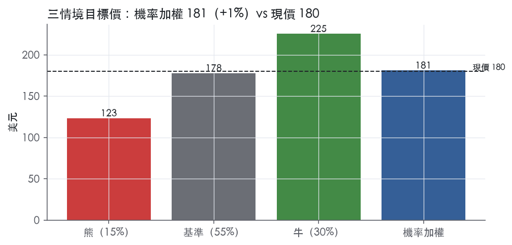
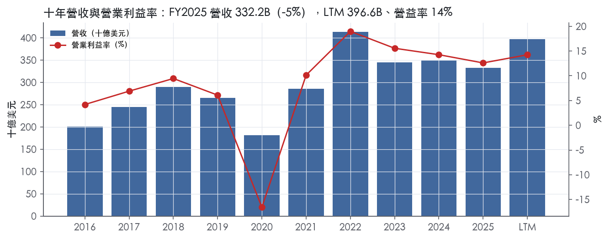
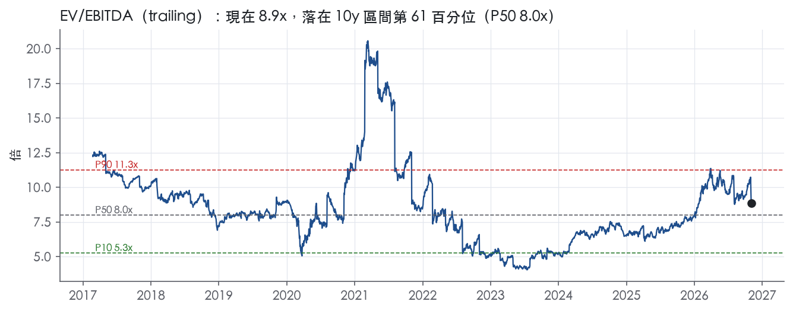
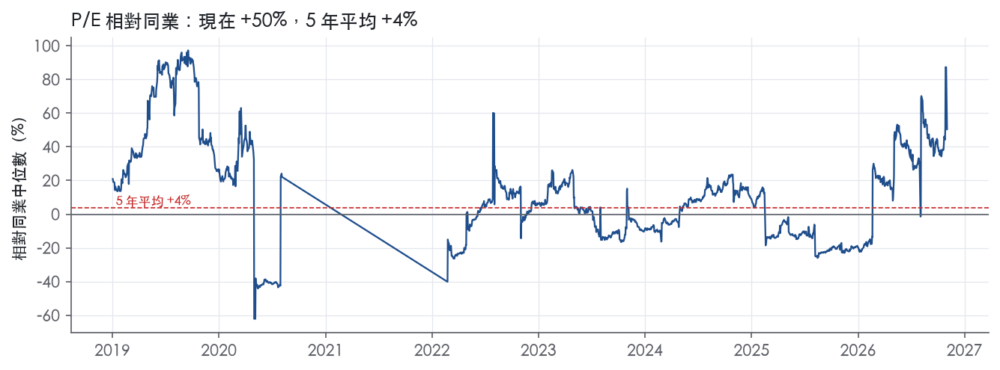
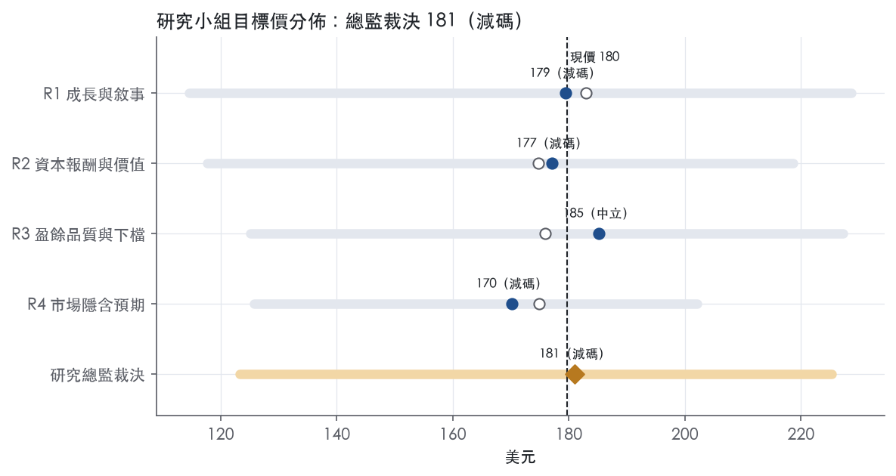
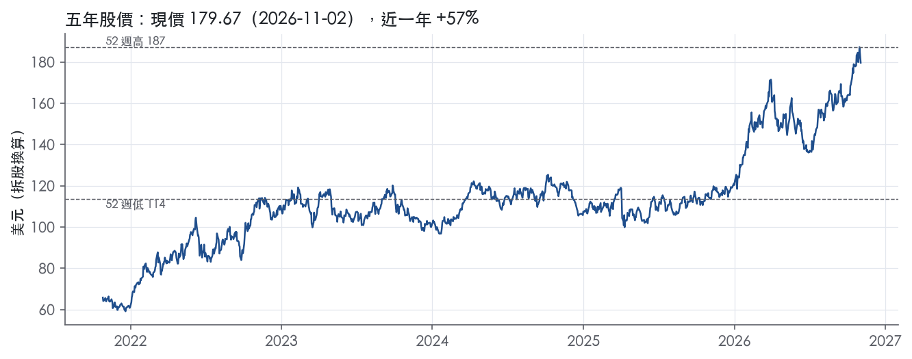

評等總表 › 能源 › XOM
高油價盈餘已入價，相對同業低配｜評等 減碼｜目標價 181
| 報告日 | 評等 | 目標價 | 當時股價 | 超額報酬 |
|---|---|---|---|---|
| 2026-11-02 | 減碼 | 181 | 180 | -6.9% |
| 2026-10-12 | 減碼 | 163 | 172 | -13.2% |
| 2026-09-28 | 賣出 | 149 | 163 | -16.1% |
| 快評 | 動作 | 結論 |
|---|---|---|
| 2026-10-30 | 維持 | 淨利比我們預測高 40.3%，維持減碼 |
| 評等 | 減碼（邊界，鄰近中立） |
| 12 個月目標價 | 181 美元 |
| 現價 | 179.67 美元（2026-11-02） |
| 預期報酬 | 股價 +0.8%＋股息 2.3%＝總報酬 +3.1%；同業籃門檻 9.9%，超額 -6.9% |
| 估值方法 | EV/EBITDA 8.0x，套在三年平均的EBITDA |
| 三情境 | 熊 123／基準 178／牛 225 |
| 研究流程 | 四位研究員兩輪辯論＋研究總監裁決 |
| 資料來源 | SEC EDGAR XBRL、Tiingo、FRED（全免費） |
高油價盈餘已入價，相對同業低配（研究總監裁決，四位研究員兩輪辯論後）
評等 減碼（邊界，鄰近中立）｜12 個月目標價 181 美元（總監三情境機率加權 184 與研究員中位數 178 各半）｜現價 179.67（2026-11-02）
預期報酬：股價 +0.8%＋股息 2.3%＝總報酬 +3.1%。同業籃門檻 9.9%，超額 -6.9%，離中立的分界不到三個百分點，屬邊界評等（落在其他級距的機率約三成）。
估值方法：EV/EBITDA 8.0x，套在三年平均的EBITDA。三情境：熊 123（15%）／基準 178（55%）／牛 225（30%）。
什麼會讓研究總監改變看法：WTI季均價低於90時Energy Products仍連兩季GAAP盈餘≥6,000M，且1Q27上游產量≥4,550 koebd，代表煉化擴產是結構性且量能補回價格，我會把Q5–Q8營益率上調到13.5%以上、轉中性；反之4Q26 8-K顯示2027資本支出不減而回購指引低於20B，熊機率上調到20%。
| 過去四季（實際，FY2026Q3） | 未來四季 | 第 5–8 季 | 第 9–12 季 | |
|---|---|---|---|---|
| 營收（B） | 396.6B | 428.4B | 424.1B | 432.6B |
| 營收成長 | 19.0% | 8.0% | -1.0% | 2.0% |
| 營業利益率 | 14.3% | 14.0% | 13.0% | 12.0% |
| EPS（美元） | 9.71 | 10.37 | 9.77 | 9.42 |
| EPS 成長 | 40.1% | 6.8% | -5.8% | -3.5% |
| 每股股息（美元） | 4.12 | 4.12 | 4.12 | 4.12 |
| P/E（現價） | 18.5x | 17.3x | 18.4x | 19.1x |
| 股息殖利率（現價） | 2.3% | 2.3% | 2.3% | 2.3% |
過去四季為申報數字；預測為研究總監的假設、程式計算。倍數與殖利率都用現價計算，用來看現價對應各期獲利的高低。
| 項目 | 上次（2026-10-13） | 這次（2026-11-03） | 變動 |
|---|---|---|---|
| 評等 | 減碼 | 減碼 | ＝ |
| 機率加權目標價（美元） | 163 | 181 | +11.2% |
| 超額報酬 | -13.2% | -6.9% | +6.3 pp |
| 目標倍數 | 8.0x | 8.0x | — |
| 未來四季營收成長 | 8.1% | 8.0% | -0.1 pp |
| 未來四季營益率 | 14.0% | 14.0% | +0.0 pp |
| 未來四季 EPS（美元） | 9.84 | 10.37 | +5.4% |
| 熊／基準／牛機率 | 14／60／26 | 15／55／30 | — |
程式計算；「未來四季」各自從當次報告的資料起點算。研究總監逐點說明見第八章「與上次報告比較」。
| 情境 | 機率（歷史） | 故事 | 未來四季營收成長 | 第 5–8 季營益率 | 倍數 | 目標價 | 股價漲跌 |
|---|---|---|---|---|---|---|---|
| 熊 | 15%（14%） | 中東供應恢復、WTI走本行上行路徑72，Energy Products回1Q26水準，FCF萎縮觸發回購但書；對應風險表第1、2條與「公司沒寫」的回購非剛性一條，倍數回自家3y P50 | 3.0% | 11.5% | 7.0x | 123 | -31.4% |
| 基準 | 55%（53%） | WTI 97降至88後持平，煉化價差回常態，Guyana與Permian量增部分抵銷價格，倍數回自家10年P50 | 8.0% | 13.0% | 8.0x | 178 | -1.1% |
| 牛 | 30%（33%） | WTI走本行下行路徑95持平，中東干擾延續、灣岸利用率維持100%，FPSO5與Permian量增兌現，倍數介於10y P50與現行8.9x | 14.0% | 14.5% | 8.5x | 225 | 25.4% |
目標價由程式依研究總監的驅動與倍數計算；機率由研究總監給定。括號內是歷史頻率：把這檔股票過去十年 12 個月報酬的波動形狀，置中在基準情境，結果落在各情境附近的比例。

四位研究員用不同方法各自估值，回應研究總監的質疑後交出第二輪，最後由總監逐點裁決。各研究員的主張見第七章，裁決理由見第八章，完整論證見《研究底稿》。
| 立場（一輪→二輪） | 加權目標價（一輪→二輪） | 評等（一輪→二輪） | 第二輪倍數 | 熊～牛目標價 | |
|---|---|---|---|---|---|
| R1 成長與敘事 | 中性→看空 | 183→179 | 減碼→減碼 | 8.0x | 115～229 |
| R2 資本報酬與價值 | 看空→看空 | 175→177 | 減碼→減碼 | 7.5x | 118～219 |
| R3 盈餘品質與下檔 | 看空→看空 | 176→185 | 減碼→中立 | 8.0x | 125～227 |
| R4 市場隱含預期 | 看空→看空 | 175→170 | 減碼→減碼 | 7.5x | 126～202 |
| 研究總監裁決 | 看空 | 181 | 減碼 | 8.0x | 123～225 |
目標價由程式依各自的驅動與倍數計算；評等＝機率加權總報酬 − 同業籃門檻。
ExxonMobil 是一家垂直整合的石油與石化集團，業務涵蓋原油與天然氣的探勘生產、原油／天然氣／石油產品／石化產品與各類特殊產品的製造、貿易、運輸與銷售，並投入碳捕捉封存、氫氨、低碳燃料、Proxxima 樹脂系統、碳材料、低碳數據中心與鋰等新興業務¹。公司 1882 年於紐澤西州註冊成立，透過全球各地的部門與關係企業（ExxonMobil、Exxon、Esso、Mobil、XTO 等名稱）在美國及多數國家營運或銷售產品¹。客戶端涵蓋從工業用戶到終端個人消費者的能源、燃料與化學品需求，公司在能源與石化產業中與同業及其他產業的替代方案競爭¹。簡單講，Exxon 是靠規模、整合與技術優勢打的大宗商品生意，上游獲利靠油氣價格，下游煉化獲利靠裂解價差，兩端天然對沖，這也是公司穩定配息逾四十年的底氣。
公司依新聞稿揭露分為四大報告分部：Upstream（上游探勘生產）、Energy Products（能源產品，即煉油與燃料）、Chemical Products（化學產品）、Specialty Products（特殊產品，如基礎油、潤滑劑），另有 Corporate and Financing 作為集團損益調整項²。從 3Q26 GAAP 獲利結構看，Upstream 7,088M、Energy Products 7,169M、Chemical Products 735M、Specialty Products 1,285M，Corporate and Financing 虧損 864M，合計總獲利 15,413M（is/ltm 對應資料包未逐分部列示，此處為新聞稿原文數字）²。YTD2026 來看，Upstream 獲利 20,752M、Energy Products 11,372M、Chemical Products 1,976M、Specialty Products 2,892M，相較 YTD2025 的 17,837M／4,033M／1,081M／2,175M，四個分部全面成長，其中 Energy Products 年增幅最大²。產量面，3Q26 Upstream 產量 4,496 千桶油當量/日、Energy Products 銷量 5,753 千桶/日、Chemical Products 銷量 4,888 千噴、Specialty Products 銷量 1,737 千噴²。年度分部別營收占比與毛利率，10-K 財務附註才有細節，Item 1 本身未揭露具體數字，10-K 未揭露分部營收佔比。公司上游資產橫跨美國、加拿大及其他美洲、歐洲、非洲、亞洲與澳洲／大洋洲，2025 年底已開發加未開發已探明儲量合計 19,311 百萬桶油當量³，其中未開發儲量約 7.0 億桶油當量占比 36%（原文：approximately 7.0 billion oil-equivalent barrels, 36 percent of the 19.3 GOEB）³。公司在 2025 年投入 19.0B 美元推進已探明未開發儲量的開發工作，其中 18.8B 美元用於油氣生產活動³。
地理足跡上，上游資產分布於美國、加拿大／其他美洲、歐洲、非洲、亞洲與澳洲／大洋洲等六大區域，Guyana、Permian、卡達、阿聯、哈薩克為近期的主要產量貢獻地³⁴。下游與化學產品則面向全球煉油與石化市場，美國墨西哥灣沿岸（U.S. Gulf Coast）是能源產品的核心產能基地，公司在 Beaumont 煉廠的擴產投資帶動蒸餾油產量自 2019 年以來增加約 40%²。亞太地區的季節性需求也直接影響化學產品銷量，3Q26 化學產品獲利下滑受累於價差收窄，但受惠亞太季節性需求帶動高值產品銷量成長部分抵銷²。客戶結構以 B2B 為主：原油／天然氣賣給煉廠與貿易商，成品油與石化原料賣給煉化下游及工業用戶，特殊產品（基礎油、添加劑）賣給潤滑油與工業客戶，10-K 未揭露單一客戶集中度與具體地區營收拆分。公司全球員工 58 千人（2025 年底），較 2024 年底 61 千人、2023 年底 62 千人續減，其中逾 59% 員工來自美國以外、涵蓋逾 160 個國籍¹。
FY2025Q4 營收 82.31B、淨利 6.50B、EPS 1.51，營益率降至 10.0%。FY2026Q1 營收回升至 85.14B，但淨利滑落至 4.18B、EPS 1.00，營益率壓縮到 8.5%，主因能源產品分部虧損 1,262M⁴。FY2026Q2 營收跳升至 116.02B（年增 42.3%），淨利 14.53B、EPS 3.48，GAAP 獲利 14,525M、調整後獲利 14,680M，上游產量創二十餘年新高（排除中東干擾），Permian 創紀錄產量，累計結構性成本節省達 16.3B 美元⁴；該季營運現金流 23.6B、自由現金流 17.2B，股東回饋 9.4B（股利 4.3B＋回購 5.1B），並宣布 1.03 美元/股的第三季股利⁴。FY2026Q3 營收 113.16B（年增 32.7%），GAAP 獲利 15,413M、EPS 3.72，調整後 EPS 4.23，上游分部獲利季減至 7,088M（因油價走低與 Guyana 權益加速攤提），能源產品獲利季增至 7,169M（美國墨西哥灣煉廠裂解機組利用率達 100%）²；該季營運現金流 25.7B、自由現金流 19.1B，股東回饋 9.4B（股利 4.3B＋回購 5.1B），淨負債降至 22.1B（總債務 34.3B 減現金 12.2B）²，公司宣布連續 44 年股利成長、第四季股利 1.07 美元/股，並預告 2027 年回購規模 20B 美元（假設合理市場條件）²。整體看，FY2026 上半年受油價與中東擾動壓低上游獲利，Q2、Q3 靠能源產品煉化價差與結構性降本回補，EPS 走出低點後連續兩季回升。
公司執行長表示「我們正在提高產量同時改善效率——這是多年持續且有紀律的投資與卓越執行的結果」，並點名墨西哥灣沿岸的 Beaumont 煉廠擴產投資帶動蒸餾油產量成長²。公司強調「優勢投資、技術，以及自 2019 年以來 16.9B 美元的結構性成本節省，正在擴大我們的獲利能力，這些是持久的改善，不只是有利價格與價差的結果」²。在上游端，公司提出 Permian 產量以每年 9% 複合成長率規劃到 2030 年，並持續取得圭亞那（Guyana）第五艘 FPSO 啟航、產能擴增 250 千桶/日的進度里程碑⁴；在國際上游方面，公司已取得 Papua LNG 的作業者地位，並同意提高在 Papua 的權益至 34%、在莫三比克 Rovuma 的權益至 50%（公司已是該項目作業者），強化「首選作業者」地位²。在新興業務上，10-K 揭露低碳解決方案（LCS）事業單位持續推進碳捕捉封存（CCS）、氫氨、低碳燃料、Proxxima 樹脂系統、碳材料、低碳數據中心與鋰等技術，並稱其成長與未來回報「取決於穩定且支持性的政府政策與市場的發展」¹；8-K 亦提到 Nucor CCS 項目啟動與 Rose 碳封存項目獲批²。整體而言，Exxon 的成長敘事仍是「規模整合＋結構性降本＋Permian/Guyana/LNG 三引擎放量」，碳捕捉與氫氨等低碳業務目前仍是選擇性佈局，尚未構成財務主線。公司對 2027 年 20B 美元回購的承諾顯示管理層對現金流韌性的信心，但該承諾本身帶有「假設合理市場條件」的但書，執行彈性仍保留在手。

ExxonMobil 的護城河評為「窄」，唯一來源是上游低成本資源組合加上煉化整合帶來的成本優勢。這個優勢讓公司在多數年份賺得過資本成本，但擋不住大宗商品週期把 ROIC 壓到資本成本以下。公司在風險因子中直接寫明「The oil, gas, and petrochemical businesses are fundamentally commodity businesses.」⁵我們有把握未來 5 年以上 ROIC 平均高於資本成本，沒有把握撐到 10 年，所以不給「寬」。趨勢判「穩定」：成本結構持續改善，但能源轉型與政策風險同步升高，兩者大致相抵。
可以成立的來源只有一類：成本優勢。
專利與品牌不列為護城河來源。公司雖然持有逾 8 千件有效專利，但原文明言「the profitability of each business segment is not dependent on any individual patent, trade secret, trademark, license, franchise, or concession.」¹
數字只勉強撐得起「窄」，撐不起「寬」。
支持「窄」的部分
與主張衝突的部分
為什麼仍維持「窄」而不下修為「無」 FY2020 的極端虧損來自疫情衝擊，此後成本結構已經改善，而且 FY2021 以來連續 5 年站上資本成本。風險在於：若油價與裂解價差同時回到 FY2019–FY2020 的水準，ROIC 很可能再度跌破門檻。因此「窄」是臨界評級，不是穩固評級。
最大的侵蝕力量是商品價格，其次是削弱執行力優勢的競爭者。
目標倍數相對整合型石油同業應該持平，不給溢價，因為護城河只有「窄」，而且 ROIC 平均超額報酬只有 0.3%。目前 P/E 18.5x，位於 5 年分位 82.9%，5 年中位數為 14.0x；在週期高檔獲利下，這個倍數不應被外推為常態。建議以中週期獲利搭配接近 5 年中位數的倍數估值，存續期假設不超過 5–10 年。
| 指標 | 最新 | 十年平均 | 標準差 | 最低 | 最高 |
|---|---|---|---|---|---|
| ROIC | 10.5% | 10.2% | 9.8% | -10.6% | 28.0% |
| 營業利益率 | 12.6% | 8.2% | 9.3% | -16.6% | 19.0% |
| FCF 利潤率 | 7.1% | 6.8% | 4.6% | -1.4% | 14.1% |
| ROE | 11.0% | 11.7% | 10.7% | -12.9% | 30.7% |
程式計算。資本成本代理值（10 年債＋5%）：9.9%；ROIC 平均減資本成本：0.3%；ROIC 有資料的 9 年中，高於資本成本 5 年。
LTM 營業現金流／淨利為 1.74 倍、近三年平均 1.66 倍、十年平均 1.59 倍，三個窗口全部是綠燈，代表帳上淨利長期都有現金流支撐，沒有「紙上盈餘」問題。LTM 自由現金流／淨利為 1.06 倍，扣掉資本支出後仍大於 1，近三年平均 0.89 倍、十年平均 0.80 倍雖略低但都在綠燈區。應計比率 LTM 為 -6.4%、近三年 -5.2%、十年平均 -5.7%，持續為負值代表淨利其實比現金流還保守，不是靠應計項目灌出來的。唯一的警訊是應收帳款成長減去營收成長在 FY2025 達 +6.3 個百分點、落在黃燈區，顯示營運資金有輕微吃掉現金的現象，但距離 >15pp 的紅燈門檻還有相當空間，且與現金轉換整體綠燈的格局不衝突，建議下一季追蹤即可，不需要現在打折。整體看，現金面是這份盈餘品質報告裡最乾淨的一塊。
3Q26 單季 GAAP 每股盈餘 3.72 美元，調整後（Non-GAAP）每股盈餘為 4.23 美元，調整後數字比 GAAP 高 0.51 美元²。YTD2026 GAAP 每股盈餘 8.18 美元，調整後為 9.82 美元，差距擴大到 1.64 美元²。金額上，YTD2026 GAAP 淨利 34,121M 美元，調整後淨利 40,957M 美元，調整項目合計拉高了 6,836M 美元的盈餘²。分部來看，Energy Products 調整後盈餘（YTD 15,951M）比 GAAP（YTD 11,372M）高出約 4,579M 美元，是調整金額最大的分部²。新聞稿本節未附上「Identified Items」逐項列表（如庫存效應、減值、重組等個別項目），因此無法逐項確認調整內容的真實性與可重複性，只能從分部盈餘表反推調整集中在 Energy Products 與 Upstream。在缺乏逐項明細的情況下，我傾向把調整後數字當作管理層對「剔除庫存／市值重估類波動後」的經營盈餘參考值，但估值仍應以 GAAP 數字為主要錨點，因為調整後盈餘長期系統性高於 GAAP（YTD 落差達 1.64 美元/股），若全盤採信會高估常態盈餘能力。公司同時強調「$16.9 billion in structural cost savings since 2019」為結構性、非一次性的成本節省，這點與調整後盈餘的性質不同，屬於真實的經營改善而非會計重分類²。
槓桿極低且持續去化：淨負債／EBITDA LTM 為 0.26 倍、近三年平均 0.29 倍、十年平均 1.00 倍，三者皆為綠燈，遠低於 1.50 倍的警戒線。截至 2026 年 9 月 30 日，淨負債為 22.1B 美元，總債務 34.3B 美元減去 12.2B 美元現金及約當現金（不含限制性現金）²。公司 YTD 已淨減少近 11B 美元的淨負債，顯示去槓桿是今年持續的動作而非帳面一次性美化²。利息保障倍數 LTM 達 65.1 倍、近三年 60.9 倍、十年平均 38.8 倍，付息能力完全不是風險。股東回饋方面，3Q26 單季股東分配總額 9.4B 美元，其中股利 4.3B 美元、回購 5.1B 美元²；公司宣布 44 年連續增加年度股利，並宣布 2027 年回購規模達 20B 美元²。（股利＋回購）／淨利 LTM 為 92.9%，近三年平均 109.6%，十年平均 79.7%，近三年比率超過 100% 看似在用舉債回饋股東，但同期淨負債反而在下降（YTD 淨減 11B 美元），可判斷回饋資金來自強勁自由現金流而非加槓桿，屬於假警報。稀釋股數年變動為 -0.8%（LTM），代表公司持續淨減少流通股數、回購確實在稀釋反向操作。
第一條：淨利率 FY2019→FY2020 跳動 -18 個百分點。這對應 2020 年新冠疫情導致全球油價崩跌、公司該年淨利為 -22.44B 美元（年度表），屬於宏觀商品價格衝擊造成的一次性虧損年，不是會計操縱或盈餘品質結構性惡化，且已距今六年、不落在 LTM 或近三年評分窗口內，對目前盈餘品質判斷沒有影響。第二條：淨利率 FY2020→FY2021 跳動 +20 個百分點。這是油價從 2020 年低點反彈、公司淨利由 -22.44B 美元回升到 23.04B 美元（年度表）的鏡像效應，同樣是商品週期的自然恢復而非盈餘灌水，可視為前一條紅旗的對稱結果，一次性、可解釋。黃燈項目：應收帳款成長超過營收成長 6.3pp（FY2025），資料包未附上對應的 MD&A 應收帳款變動說明，我判斷這與營運資金週期性波動有關，風險可控但建議下季複查。SBC／營收欄位無資料（—），代表資料包未揭露股權酬勞占營收比重，不能直接判定為綠燈或紅燈，但從現金流量角度看，CFO 持續大幅領先淨利，顯示即便 SBC 有一定規模，也沒有扭曲整體現金轉換的結論。除上述兩條程式紅旗與一條黃燈外，應計比率、槓桿、利息保障、股數稀釋、股東回饋五項指標在 LTM、近三年、十年三個窗口都是綠燈，沒有其他未解釋的異常。
估值應以 GAAP 盈餘與現金流（LTM FCF 42.96B 美元）為主要錨點，不宜直接套用新聞稿的調整後 EPS（YTD 9.82 美元 vs GAAP 8.18 美元），因為調整項目缺乏逐項明細、且長期系統性拉高盈餘。盈餘品質整體不需要額外打折，現金轉換三個窗口都在 1 倍以上、應計比率持續為負，支持對帳面淨利給予正常信賴度。極低槓桿（淨負債／EBITDA 0.26 倍）與高利息保障（65.1 倍）不構成任何倍數壓縮理由，估值研究員在給 P/E 或 EV/EBITDA 倍數時可以維持同業中性甚至略高定位，不必因財務體質因素額外扣分。
| 項目 | LTM | 近三年 | 十年 | 燈號 | 規則 |
|---|---|---|---|---|---|
| 營業現金流／淨利 | 1.74x | 1.66x | 1.59x | 綠 | ≥1.00x 綠、<0.80x 紅 |
| 自由現金流／淨利 | 1.06x | 0.89x | 0.80x | 綠 | ≥0.90x 綠、<0.60x 紅 |
| 應計比率（(淨利−CFO)／平均總資產） | -6.4% | -5.2% | -5.7% | 綠 | ≤0.0% 綠、>5.0% 紅 |
| SBC／營收 | — | — | — | — | ≤3.0% 綠、>8.0% 紅 |
| 淨負債／EBITDA | 0.26x | 0.29x | 1.00x | 綠 | ≤1.50x 綠、>3.00x 紅 |
| 利息保障倍數（營業利益／利息） | 65.1x | 60.9x | 38.8x | 綠 | ≥8.00x 綠、<3.00x 紅 |
| 稀釋股數年變動 | -0.8% | 0.9% | 0.4% | 綠 | ≤0.0% 綠、>3.0% 紅 |
| （股利＋回購）／淨利 | 92.9% | 109.6% | 79.7% | 綠 | ≥50.0% 綠、<0.0% 紅 |
| 應收帳款成長 − 營收成長（FY2025） | +6.3pp | — | — | 黃 | ≤5pp 綠、>15pp 紅 |
程式計算；燈號以 LTM（無則近三年平均）判定。
Exxon 的 LTM EBITDA 86.50B、FCF 42.96B 主要由上游油氣價格與下游煉化價差共同驅動，過去八季 EPS 從 FY2026Q1 的 1.00 到 FY2026Q2／Q3 回升至 3.48／3.72，波動幅度已說明商品價格是最大的盈餘驅動。目前 trailing P/E 18.5x 落在五年 82.9% 分位，EV/EBITDA 8.9x 落在 81.6% 分位，估值已反映景氣高點附近的獲利水準，一旦油價或裂解價差回落，EPS 與倍數同時承壓的風險最大。
| 風險 | 觸發指標（看什麼數字、在哪裡看） | 對 EPS 的影響方向與粗略幅度 | 未來 12 個月發生機率（高／中／低） | 出處 |
|---|---|---|---|---|
| 原油／天然氣價格下跌壓縮上游獲利 | 布蘭特／WTI 現貨價；10-K 揭露 2025 年原油均價 65.18 美元/桶、天然氣均價 4.28 美元/千立方英尺（總計口徑），對比 2024 年 76.23 美元/桶、4.53 美元/千立方英尺 | 方向：負；幅度：大（Upstream earnings 3Q26 7,088M，季減自 2Q26 的 7,927M，主因油價下跌²） | 高 | ³² |
| 下游煉化裂解價差／利用率波動 | Energy Products 季獲利（8-K 逐季揭露）、美國灣岸煉廠裝置利用率 | 方向：雙向；幅度：大（Energy Products 獲利 2Q26 5,465M → 3Q26 7,169M，單季波動逾 1.7B） | 中 | 8-K 財報新聞稿（2026-10-30） |
| 地緣政治／貿易政策衝擊（制裁、關稅、中東干擾） | 政府制裁公告、關稅政策生效日、中東供應中斷新聞 | 方向：負；幅度：中（「higher global fuels utilization excluding Middle East impacts」顯示中東干擾已拖累全球利用率²） | 中 | ¹² |
| 大型開發專案延遲或成本超支（Guyana、Papua LNG、CCS 等） | 專案啟動／里程碑公告日期、資本支出/營收比（FY2025 為 8.5%） | 方向：負；幅度：中（公司稱開發專案「可能超過五年」且受法規、co-venturer 資金進度影響）³ | 低 | 10-K 年報 FY2025 Item 2（不動產） |
| 低碳政策支持力度不足，LCS 投資難以兌現回報 | 政府低碳補貼/法規公告、CCS／氫氨專案資本支出揭露 | 方向：負；幅度：小（目前尚非財務主線） | 低 | 10-K 年報 FY2025 Item 1（業務） |
油價下跌是最大、最確定能動到 EPS 的風險。 10-K 揭露 2025 年總計原油均價為每桶 65.18 美元，較 2024 年的 76.23 美元下滑，天然氣均價也從 4.53 美元/千立方英尺降至 4.28 美元/千立方英尺³。這直接反映在 FY2026Q1 的 Upstream 獲利疲弱與 EPS 滑落至 1.00，而 3Q26 的 Upstream 獲利季減（7,927M→7,088M）也被公司明確歸因於「lower prices and accelerated Guyana entitlement impact」²。油價是 Exxon 唯一無法控制、又直接吃掉淨利最大一塊的變數，監測指標就是現貨油價走勢與每季 Upstream earnings 揭露。
煉化裂解價差波動幅度同樣驚人，且方向不一定跟上游同步。 3Q26 Energy Products 獲利 7,169M，季增自 2Q26 的 5,465M，公司歸因於美國灣岸煉廠達到 100% 原油裝置利用率及強勁優化活動²。但這種高利用率不可持續保證，一旦裂解價差收窄或計畫外停機發生，Energy Products 獲利可能快速回吐，過去兩年此分部單季獲利波動已超過 1.7B 美元。
地緣政治與貿易政策是 10-K 風險因子章節反覆強調的不可控因素。 公司在前瞻聲明中列舉「war, civil unrest, armed hostilities, attacks against the Company or industry」、「trade sanctions, trade tariffs」等多項政治風險¹，而 8-K 也直接點名「Middle East impacts」拖累全球燃料利用率²，顯示這不是抽象的免責條款，而是已實際發生並影響當期財報的因子。
大型資本專案延遲風險對短期 EPS 影響有限，但對長期產能規劃有實質意義。 10-K 指出澳洲與阿聯的未開發儲量已逾五年未開發，主因基礎設施產能限制及大型專案所需的長交付時間（可超過五年）³。公司 2025 年投入 19.0B 美元推進已探明未開發儲量的開發，顯示資本持續投入，但專案時程本身仍受「regulatory approvals, government policies, consumer preferences, the pace of co-venturer/government funding」等因素影響³。
低碳業務（LCS）目前尚未構成財務主線，風險相對可控。 10-K 明確指出碳捕捉封存、氫氨、低碳燃料等業務的推進「取決於未來市場因素，例如持續的技術進展、穩定的政策支持，以及及時的法規制定與許可」¹，8-K 也僅提及 Nucor CCS 啟動與 Rose 碳封存專案獲批等個別進度²，尚未看到具體財務貢獻數字，因此列為機率低、幅度小的風險。
股東回饋承諾（2027 年 20B 美元回購）的彈性但書，可能在油價急跌時成為 EPS 支撐力道減弱的訊號。 公司宣布 2027 年計畫回購 20B 美元，但註明「假設合理市場條件」²，這代表回購規模並非剛性承諾；若油價續跌、自由現金流收縮（FY2026Q1 FCF 僅 2.23B，遠低於 Q2／Q3 的 17.03B／18.47B），回購放緩會直接減少每股盈餘的「財務工程」加持，投資人應監測每季實際回購金額對比年初指引的落差。
淨負債快速去化的速度若反轉，可能提示現金流吃緊而非單純去槓桿。 公司強調「nearly 11B 美元 YTD 淨負債下降」且淨負債已降至 22.1B²，這是多季現金流強勁的結果；但若後續總債務回升（FY2026Q1 總債務曾升至 47.66B，高於 FY2025Q4 的 43.50B），同時 FCF 收縮，應視為上游或下游獲利轉弱的早期警訊，而非單純資本結構調整。
現價 179.67 對應 trailing（過去四季）P/E 18.5x、EV/EBITDA 8.7x、EV/EBITA 13.4x、EV/Sales 1.9x、FCF 殖利率 5.9%。主要估值倍數 EV/EBITDA 現在 8.9x，落在10 年區間第 61 百分位（P10／P50／P90 = 5.3x／8.0x／11.3x）。

把程式的機械基準預測放到現價下，市場付的前瞻倍數是：EV/EBITDA（未來四季） 8.2x、P/E（未來四季） 17.8x、EV/EBITDA（第 5–8 季） 8.0x、P/E（第 5–8 季） 17.7x。反推 DCF 顯示市價隱含未來五年營收年成長 9.6%（WACC 9.0%、終值成長 3.0%、FCF 利潤率 7.6%，SBC 不加回）。
| 倍數 | 現在 | 10 年 P10 | 10 年 P50 | 10 年 P90 | 現在分位 | 全期 P50 |
|---|---|---|---|---|---|---|
| P/E | 18.5x | 9.3x | 16.3x | 29.1x | 69.9% | 16.3x |
| EV/EBITDA | 8.9x | 5.3x | 8.0x | 11.3x | 61.2% | 8.0x |
| EV/EBITA | 13.6x | 6.8x | 13.9x | 30.0x | 47.8% | 13.9x |
| EV/EBIT | 13.6x | 6.8x | 13.9x | 30.0x | 47.8% | 13.9x |
| EV/Sales | 1.9x | 1.1x | 1.3x | 1.8x | 93.4% | 1.3x |
| P/S | 1.9x | 0.9x | 1.2x | 1.5x | 94.9% | 1.2x |
| P/FCF | 17.3x | 8.5x | 19.8x | 35.8x | 46.0% | 19.8x |
trailing 倍數（股價 ÷ 過去四季）；分位以每個交易日計算。
同業籃：CVX, COP, EOG, OXY, PSX（手動名單（playbooks/peers.yaml））。評等門檻 9.9%：同業「倍數不變下持有一年」的隱含報酬中位數（＝ FCF 殖利率 ×(1＋g)＋g，g 為 5 年營收年複合成長並夾在 −2%～8%），每家夾在 0～15%、P/E 低於 5 倍視為資料可疑而排除，中位數再限制在 10 年債到 10 年債＋5% 之間（同業原始中位數 14.5%）。
| 代號 | 市值 | 5 年營收 CAGR | 營益率 | ROIC | P/E | 5 年 P/E 中位數 | EV/EBITDA | P/FCF | 隱含報酬 |
|---|---|---|---|---|---|---|---|---|---|
| XOM | 732.9B | 12.9% | 14.3% | 10.5% | 18.5x | 14.0x | 8.7x | 17.1x | 14.3% |
| CVX | 450.0B | 14.8% | 14.9% | 6.9% | 21.6x | 15.4x | 8.6x | 16.7x | 14.5% |
| COP | 176.4B | 25.7% | 23.1% | 10.1% | 19.5x | 12.4x | 7.3x | — | 13.5% |
| EOG | 83.5B | 15.5% | 32.9% | 16.3% | 12.3x | 10.7x | 6.3x | 6.5x | 24.5% |
| OXY | 60.7B | 3.9% | 23.9% | 3.6% | 9.1x | 12.7x | 5.6x | 12.7x | 12.1% |
| PSX | 107.3B | 15.6% | 8.7% | 8.6% | 8.8x | 13.9x | 7.0x | — | 20.3% |
| 同業中位數 | 15.5% | 23.1% | 8.6% | 12.3x | 12.7x | 7.0x | 12.7x | 9.9% |
全部 trailing，程式以各公司 SEC XBRL 與 Tiingo 行情計算；第一列為本檔。
P/E 相對同業中位數：現在 50.4%，過去 1 年平均 19.7%、3 年 5.2%、5 年 4.0%；EV/EBITDA 相對同業中位數：現在 24.7%，過去 1 年平均 35.0%、3 年 14.0%、5 年 9.6%。

程式的機械基準（成長率從過去四季年增率三年收斂到 6%、利潤率持平）用 EV/EBITDA 10 年 P50（trailing） 估值得到 191（6.4%），用現行倍數得到 212。這兩個數字只是參考點，不是本報告的目標價；研究員對這個定價的回應在第七章。
下表是每位研究員第一輪（各自獨立）與第二輪（回應研究總監的質疑後）的結果。目標價全由程式依各自的假設計算。
| 立場（一輪→二輪） | 加權目標價（一輪→二輪） | 評等（一輪→二輪） | 第二輪倍數 | 熊～牛目標價 | |
|---|---|---|---|---|---|
| R1 成長與敘事 | 中性→看空 | 183→179 | 減碼→減碼 | 8.0x | 115～229 |
| R2 資本報酬與價值 | 看空→看空 | 175→177 | 減碼→減碼 | 7.5x | 118～219 |
| R3 盈餘品質與下檔 | 看空→看空 | 176→185 | 減碼→中立 | 8.0x | 125～227 |
| R4 市場隱含預期 | 看空→看空 | 175→170 | 減碼→減碼 | 7.5x | 126～202 |
| 研究總監裁決 | 看空 | 181 | 減碼 | 8.0x | 123～225 |
目標價由程式依各自的驅動與倍數計算；評等＝機率加權總報酬 − 同業籃門檻。
分歧度：第一輪 加權目標價 175～183（區間＝現價的 5%）· 倍數 7.5～8x · 立場 中性×1、看空×3；第二輪 加權目標價 170～185（區間＝現價的 8%）· 倍數 7.5～8x · 立場 看空×4（方向一致）。

| 研究員 | 第二輪主張 | 堅持的理由 |
|---|---|---|
| R1 成長與敘事 | 減碼，企業價值倍數8.0倍，錨定自家十年中位數。 | 第二年營收−3%不改：煉化單季波動逾1.7B，高點不可外推。 |
| R2 資本報酬與價值 | 看空，企業價值倍數7.5倍，低於十年中位數8.0倍。 | 資本支出比重翻倍、投入資本報酬率從28.0%降到10.5%，不給中位數。 |
| R3 盈餘品質與下檔 | 相對低配，企業價值倍數8.0倍，對同業溢價收斂到3年與5年平均。 | 第二年營收只降1%：Guyana新產能與Permian量增抵銷油價下滑。 |
| R4 市場隱含預期 | 看空，企業價值倍數7.5倍，偏空來自盈餘而非倍數。 | 現價要營收守住2026下半年高檔三年，油價降到88美元時做不到。 |
每位研究員的逐條回應與完整論證見《研究底稿》（XOM_研究底稿_2026-11-03.docx）。
| 分歧點 | R1 | R2 | R3 | R4 | 什麼資料會分出勝負 |
|---|---|---|---|---|---|
| 目標倍數 | 8.0x：劇本錨 10y P50，窄護城河不溢價也不折價 | 7.5x：資本密度翻倍、ROIC 28.0%→10.5%、對同業溢價回 5 年平均 | 8.0x：對同業溢價從 24.7% 收斂到 3／5 年平均區間 | 7.5x：ROIC 超額僅 0.3%、「10 年窗口前段利率較低」 | 2027 年資本支出指引是否低於 FY2025；WTI ≤90 時 Energy Products 是否連兩季 ≥6,000M |
| Q5–Q8 營益率 | 12.0% | 13.5%：FY2025 在 65 美元已 12.6% | 13.0% | 12.5% | 2027Q3 單季營益率對當季 WTI 季均價 |
| Q5–Q8 營收成長 | −3%：高點不可外推 | −3% | −1%：88 持平，FPSO5 與 Permian 量增抵銷 | −3% | 1Q27 上游產量是否回到 4,550 koebd 以上 |
| Q9–Q12 營益率 | 11.0% | 12.5% | 12.5% | 11.5% | 4Q26 8-K 對 non-cash expense 與 Guyana 權益攤提的 2027 指引 |
| 熊情境倍數與深度 | 6.8x（5y P50）、y2 營益率 10.0% | 6.8x、y2 11.0% | 7.0x（3y P50）、y2 11.5% | 7.0x（3y P50）、y2 11.5% | WTI 走 72 路徑時 Energy Products 是否重演 1Q26 虧損 1,262M |
1. 目標倍數：裁 R1／R3，8.0x。 第一，劇本錨就是自家 10 年 trailing EV/EBITDA P50 8.0x，窗口跨 FY2020 谷底與 FY2022 高峰，最接近「價格÷中週期 EBITDA」。第二，基準模型顯示市場對 Q5–Q8 基準預測付的前瞻倍數就是 8.0x——8.0x 是市場持平，不是溢價；壓到零報酬倍數 7.5x 等於主張前瞻倍數會收縮 6%，需要個股惡化的證據。R2 的兩條都不是：ROIC 從 28.0% 收斂到 10.5%是商品週期，mid_cycle 主尺套三年平均 EBITDA 已把週期平掉，再因 ROIC 收斂壓倍數是重複計算；資本支出／營收 FY2025 的 8.5% 對照 FY2019 的 9.2%、FY2020 的 9.5%（年度表）並不異常，10 年帶本來就涵蓋這些年份。第三，R4 的「10 年窗口前段利率較低」是利率重複計算，依原則 7 退回；去掉它只剩 ROIC 超額 0.3%，而護城河章對這條的結論是「相對整合型同業持平、不給溢價」——整合型可比 CVX 是 8.6x（同業表），持平於 CVX 不等於 7.5x。盈餘品質章也明示 0.26 倍淨負債／EBITDA 與 65.1 倍利息保障「不構成倍數壓縮理由」。不給 8.0x 以上的理由只有一個：XOM 對 E&P 為主籃子的 EV/EBITDA 溢價 24.7%，仍高於 5 年平均 9.6%、3 年平均 14.0%（同業表）。
2. Q5–Q8 營益率：裁 R3，13.0%。 四人都以本行 2027Q3 WTI 88 持平做 Q5–Q8。校準點兩個：FY2024 在實現油價 76.23 美元時營益率 14.3%（10-K FY2025 Item 2），FY2025 在 65.18 美元時 12.6%；88 高於兩者，季營業利益對 WTI 每 1 美元 +0.35B（R² 0.70）方向為正。R1 的 12.0% 低於 FY2025 在 65 美元的水準，等於假設 88 美元的價格貢獻被全部吃掉，他沒有列出吃掉它的項目。R2 的 13.5% 在他 V5 的拆解下站得住，但本部營業利益預測紀錄 36 季樣本全部偏高（總監 +2.9%、R2 +1.3%、R3 +2.5%），依紀錄表用法向反方向修正；加上兩個已揭露的抵銷項——8-K 2026-10-30 的「higher non-cash expenses」與「accelerated Guyana entitlement impact」、化學品價差收窄——取 13.0%。
3. Q5–Q8 營收成長：裁 R3，−1%。 R1／R2／R4 的 −3% 共用一個理由「高點不可外推」，但高點已在 NTM 被稀釋：2Q26 116.02B、3Q26 113.16B進了 LTM，四人的 NTM 成長 7–9% 已經是 97→88 的均值，Q5–Q8 的價格變動只剩 NTM 均值到 88 這一段。另一邊是量：FPSO5 預定 4Q26 投產、產能 +250 kbd，Permian 規劃 9% 年複合到 2030（8-K 2026-07-31），Papua、Rovuma 權益提高到 34%、50%（8-K 2026-10-30）。只有 R3 把量放進數字。研究員營收紀錄系統性偏低 0.2–0.5%，也支持偏向較高者。
4. Q9–Q12 營益率：own，12.0%。 本行前提到 2027Q3 為止，指引明寫 88「仍是下行路徑」、EIA 76，第三年不應停在 88，R2／R3 的 12.5% 與指引方向不合；R1 的 11.0% 低於 FY2025 在 65 美元的 12.6%，要有結構性惡化證據，他沒給，而 2019 年以來累計 16.9B 的結構性降本（8-K 2026-10-30）方向相反。取 12.0%，低於 FY2025，扣的是新專案 non-cash expenses、Guyana 權益攤提、Papua／Rovuma 權益提高後擴大的折舊基礎（8-K 2026-10-30），以及本部紀錄偏高的修正。基準模型的 9.8% 是含 FY2016 4.2%、FY2020 −16.6%（年度表）的十年中位數，那是降本之前的成本結構，不採。
5. 熊情境倍數與深度：裁 R3。 R1／R2 的 6.8x 是 5 年 P50，分母含 FY2022 102.59B、FY2023 74.27B 的高峰 EBITDA；兩人在定基準錨時都說這個帶被高峰盈餘壓低、不適合當中週期錨，卻拿它套在熊情境已正常化的 EBITDA 上，是雙重壓縮。R3／R4 的 7.0x 是自家 3 年 P50，涵蓋 FY2024–FY2025 營收 349.58B→332.24B 的油價回落期，是油價回落時市場對 XOM 自己付的倍數。深度上，R1 熊情境 Q5–Q8 營益率 10.0% 配 WTI 72，比 FY2025 在 65.18 美元時的 12.6% 還低——他自己在 G4 寫「72 還高於去年實現價格」，和這組營益率矛盾。R3 的 11.5% 低於 FY2025 的差距由 Energy Products 回到 1Q26 虧損 1,262M 的水準（8-K 2026-07-31）解釋，並已納入 Guyana 分成回補與回購但書（股數 −1%），對應風險表第 1、2 條與「公司沒寫」的回購非剛性一條。
漂移與總經偏離。 漂移表無程式旗標。R1 向中位數靠攏 44%，但五條接受全部附證據：倍數改劇本主尺是因為我第一輪轉發了他原本看不到的自家 10 年帶，機率調整引用程式的歷史對照；不退回。R3、R4 的變動方向是遠離中位數。drift_rejections 為空。R4 倍數理由中的利率部分依原則 7 退回，但那是理由違規，不是漂移。總經偏離：四人 macro_deviations 皆空；R3 第一輪自設的 80／65 油價路徑已撤回改依本行前提，接受。本裁決 macro_deviations 為空。
| 驅動 | 基準 | 裁決 | 取自 | 理由 |
|---|---|---|---|---|
| NTM 營收成長 | 14.6% | 8.0% | R3 | 基準把含 42.3%、32.7% 兩季的 LTM 年增率線性收斂，WTI 97→88 下不成立；R3 的 8% 高於 R1／R4 的 7%，對應營收紀錄偏低的修正 |
| Q5–Q8 營收成長 | 10.3% | −1.0% | R3 | 裁決 3 |
| Q9–Q12 營收成長 | 6.0% | 2.0% | R2 | 油價向 EIA 76 下行，Permian 9% 年複合與 Guyana 量增抵銷；營收紀錄偏低，取四人中次高者 |
| NTM 營益率 | 12.8% | 14.0% | R3 | 2Q26 16.9%、3Q26 18.9%（dv.op_margin）含煉化峰值；97→88 的季營業利益機械變動 −3.14B（總經敏感度）；R3 的 14.0% 低於其他三人的 14.5%，對應紀錄偏高修正 |
| Q5–Q8 營益率 | 11.3% | 13.0% | R3 | 裁決 2 |
| Q9–Q12 營益率 | 9.8% | 12.0% | own | 裁決 4 |
| 股數年變動 | −3.4% | −2.5% | R2／R3 | 2027 年回購 20B（8-K 2026-10-30）對市值 732.91B的規模小於基準隱含，且附「合理市場條件」但書 |
不改的：D&A／營收維持 7.6%，不採 R3 的 7.8%——non-cash expense 上升已反映在營益率，EV/EBITDA 口徑下提高 D&A 比率反而抬高 EBITDA 與目標價，與他「保守」的意圖相反；資本支出／營收維持 7.0%，不採 R2 的 7.5%——上半年現金資本支出 13.0B（8-K 2026-07-31）已在 LTM 比率內，R1、R4 同樣撤回了上調。稅率 28.3%、SBC 0% 照基準。
目標倍數：8.0x EV/EBITDA，主尺 mid_cycle（三年平均 EBITDA），EV 減 NTM 期末淨負債。錨： 8.0x，trailing 帶配正常化主尺。交叉驗證：基準模型顯示 8.0x 套基準預測的隱含 P/E(NTM) 18.9x、EV/EBITDA(Q5–Q8) 7.9x，前者在 10 年 P/E 中位數 16.3x偏上，可接受。相對同業：XOM trailing 8.7x 對 CVX 8.6x 持平、對籃子中位數 7.0x 溢價 24.7%；8.0x 隱含對籃子溢價收斂到 3 年平均 14.0% 附近、對 CVX 小幅折價，符合護城河「窄」。
| 情境 | 機率 | 來源 | 驅動（營收成長／營益率，y1／y2／y3） | 倍數 | 劇情 |
|---|---|---|---|---|---|
| 牛 | 30% | R3 牛，y3 營收由 1% 拉平至基準的 2%（牛不應低於基準） | 14%／2%／2%；16%／14.5%／13.5%；股數 −3% | 8.5x | WTI 走本行下行路徑 95 持平，中東干擾延續、灣岸利用率維持 100%，FPSO5 與 Permian 量增兌現；倍數在 10y P50 與現行 8.9x（倍數帶）之間 |
| 基準 | 55% | 裁決 | 上表 | 8.0x | WTI 97→88，煉化價差回常態，量增部分抵銷價格 |
| 熊 | 15% | R3 熊 | 3%／−9%／0%；12.5%／11.5%／11.0%；資本支出 7.8%、股數 −1% | 7.0x | 中東供應恢復、WTI 走本行上行路徑 72，Energy Products 回 1Q26 水準，FCF 萎縮觸發回購但書；對應風險表第 1、2 條與「公司沒寫」的回購非剛性一條 |
機率從歷史出發。程式對 R3 情境的對照是牛區 34%／基準區 53%／熊區 14%，我的三個情境與 R3 距離相近，以此為起點。牛 30% 低於歷史 4 個百分點，理由是公司特有：牛情境同時需要 WTI 95 路徑（本行 25%）與灣岸利用率延續 100%，風險表第 2 條指出這種利用率「不可持續保證」；油價越高，Guyana PSC 下公司分得桶數越少（8-K 2026-10-30「accelerated Guyana entitlement impact」），牛情境的盈餘槓桿低於歷史上的油價上行期。熊 15% 貼近歷史 14%：風險表第 1 條機率「高」，但 WTI 72 是本行「軟著陸」路徑（20%），需求不崩；R3 的熊還要 Energy Products 重演 1Q26，兩個條件疊加的頻率不高於歷史，44 年連續增股利與 0.26 倍淨負債／EBITDA（盈餘品質章）托住下檔。牛高於熊，與歷史順序一致，是本部 22 份報告熊皆高於牛之後的修正；三者偏離歷史都在 10 個百分點內。不採 R3 的 27／58／15：他用油價 95 路徑機率 25% 封頂牛，但總經敏感度顯示 WTI 每 10% 只動股價 1.4%（t 2.7），牛結果不必然要 95——WTI 88 配倍數回到現行 8.9x 就接近牛，封頂邏輯過強。
差在盈餘，不在倍數。市場對 Q5–Q8 基準預測付的前瞻倍數 8.0x 與我們的目標倍數相同；差距在營收——基準模型把 LTM 年增率線性收斂到 Q5–Q8 營收 501.71B，我們是 −1%，營益率 13.0% 雖高於基準 11.3% 但補不回營收差，反推 DCF 市價隱含五年營收成長 9.6%，等於付 2026 下半年的油價與價差延續三年。立場看空，指相對同業低配：機率加權總報酬低於同業籃隱含報酬 9.9%，但絕對報酬接近零、下檔由股利與資產負債表托住；若程式評等落在中立，差異在門檻的位置而非方向——我們不預期絕對下跌，而是相對 EOG（隱含 24.5%）、PSX（20.3%）沒有超額。
| 項目 | 上次（2026-10-13） | 本次 | 變或不變的依據 |
|---|---|---|---|
| 立場 | 看空 | 看空（相對低配） | 不變。快評：「量補不回價」成立，3Q26 上游產量 4,496 koebd 未回到上次設定的 4,988（8-K 2026-10-30） |
| 目標倍數 | 8.0x mid_cycle | 8.0x mid_cycle | 不變。劇本錨 10y P50 仍 8.0x；上次「收回對 CVX 溢價」已實現——XOM 8.7x 對 CVX 8.6x（同業表） |
| NTM 營收成長／營益率 | 8.1%／14.0% | 8.0%／14.0% | 幾乎不變。3Q26 淨利比我們預測高 40.3%（快評），但本行 2026Q4 WTI 97 與 Energy Products 峰值回落抵銷 |
| Q5–Q8 營益率 | 12.5% | 13.0% | 上調。本行 2027Q3 WTI 前提由 76 上調至 88（本行總經前提 2026-11-01），季營業利益對 WTI 每 1 美元 +0.35B |
| 基準目標價 | 157 | 由程式重算 | 上移。油價前提上調、淨負債降至 22.1B、2027 回購 20B 指引 |
| 牛（機率／目標價） | 26%／227 | 30%／R3 情境 227 | 機率上調：上次低於歷史 8 個百分點沒有足夠公司證據，本次向歷史 34% 靠攏、修正熊高於牛的偏誤 |
| 熊（機率／目標價） | 14%／100 | 15%／R3 情境 125 | 目標價上移：上次熊走本行下行 62，本次本行上行路徑 72，整體油價前提上調 |
| 「改變看法」條件 | 3Q26／4Q26 仍寫中東擾動且 1Q27 產量 ≥4,988 | 見可證偽主張 | 3Q26 新聞稿仍寫「Middle East impacts」（成立），產量條件未成立，故不轉中性 |
現價 179.67 → 點估目標價 178 → 機率加權目標價 184 → 目標價 181，差距拆成五段：成長順延 -0 美元（市場現行倍數 7.5x 一年後持平、獲利照機械基準）；倍數差 +12 美元（總監倍數 8.0x vs 市場持平倍數 7.5x，同一機械基準預測）；盈餘差 -13 美元（總監預測的三年平均EBITDA 88.1B vs 機械基準 93.1B，同一倍數）；情境不對稱 +6 美元（機率加權減點估）；研究小組平均 -3 美元（總監機率加權 184 與研究員第二輪中位數 178 各半）。各段相加等於目標價減現價。本階段未接賣方共識，差距以市場隱含預期為對照。
| 驅動 | 機械基準 | 研究總監 | 差異 |
|---|---|---|---|
| 未來四季營收成長 | 14.6% | 8.0% | -6.6 pp |
| 第 5–8 季營收成長 | 10.3% | -1.0% | -11.3 pp |
| 第 9–12 季營收成長 | 6.0% | 2.0% | -4.0 pp |
| 未來四季營益率 | 12.8% | 14.0% | +1.2 pp |
| 第 5–8 季營益率 | 11.3% | 13.0% | +1.7 pp |
| 第 9–12 季營益率 | 9.8% | 12.0% | +2.2 pp |
| D&A／營收 | 7.6% | 7.6% | ＝ |
| 資本支出／營收 | 7.0% | 7.0% | ＝ |
| SBC／營收 | 0.0% | 0.0% | ＝ |
| 稅率 | 28.3% | 28.3% | ＝ |
| 股數年變動 | -3.4% | -2.5% | +0.9 pp |
研究總監只寫偏移，未寫的沿用基準。
| 期 | 營收 | 成長 | 營益率 | 營業利益 | EBITDA | EBITA | 淨利 | EPS | FCF | 期末淨負債 |
|---|---|---|---|---|---|---|---|---|---|---|
| 未來四季 | 428.4B | 8.0% | 14.0% | 60.0B | 92.4B | 60.0B | 42.4B | 10.37 | 45.0B | 14.9B |
| 第 5–8 季 | 424.1B | -1.0% | 13.0% | 55.1B | 87.2B | 55.1B | 38.9B | 9.77 | 41.5B | 11.2B |
| 第 9–12 季 | 432.6B | 2.0% | 12.0% | 51.9B | 84.6B | 51.9B | 36.6B | 9.42 | 39.2B | 9.7B |
程式依上表的驅動計算；季度用最近四季季節性分攤；不含營運資金變動。
估值方法：EV/EBITDA 8.0x，套在三年平均的EBITDA。研究總監目標倍數的錨：自家10年trailing EV/EBITDA P50 8.0x（band.EV/EBITDA.10 年.P50）套三年平均EBITDA，等於市場對Q5–Q8基準付的前瞻倍數；對CVX 8.6x小幅折價、對E&P籃子溢價收斂至3年平均。
計算：EBITDA（mid-cycle (avg of 3 yrs)） 88.1B × 8.0x＝EV 704.4B，減未來四季期末淨負債 14.9B＝權益價值 689.5B，除以mid-cycle (avg of 3 yrs)的股數 → 點估目標價 178（-1.1%）；隱含 P/E（未來四季）17.1x、P/E（第 5–8 季）18.2x、EV/EBITDA（第 5–8 季）8.1x、FCF 殖利率（第 5–8 季）6.0%。
總監三情境機率加權目標價 184，研究員第二輪中位數 178，兩者各半＝目標價 181；預期報酬 股價 +0.8%＋股息 2.3%＝總報酬 +3.1%；減評等門檻 9.9%（同業籃隱含報酬中位數（CVX, COP, EOG, OXY, PSX））＝超額報酬 -6.9% → 評等 減碼（超額 >+15% 買進、+5～+15% 加碼、±5% 中立、−5～−15% 減碼、<−15% 賣出）。同一份資料重開研究小組，超額約有正負四個百分點的雜訊（一個標準差，二十檔實測）；以此估計，評等落在其他級距的機率約三成。超額離中立的分界不到三個百分點，應視為邊界評等。
| 情境 | 機率 | 未來四季成長 | 第 5–8 季成長 | 第 5–8 季營益率 | EBITDA（mid-cycle (avg of 3 yrs)） | 倍數 | 目標價 |
|---|---|---|---|---|---|---|---|
| 熊 | 15% | 3.0% | -9.0% | 11.5% | 73.9B | 7.0x | 123 |
| 基準 | 55% | 8.0% | -1.0% | 13.0% | 88.1B | 8.0x | 178 |
| 牛 | 30% | 14.0% | 2.0% | 14.5% | 102.4B | 8.5x | 225 |
| 主張 | 驗證日 | 看哪個數字 | 門檻 |
|---|---|---|---|
| 煉化峰值回落，4Q26 Energy Products GAAP盈餘自3Q26的7,169M回落 | 2027-02-15 | 4Q26 Energy Products Earnings (U.S. GAAP)（8-K） | < 6,000M |
| FPSO5與Permian量增兌現，1Q27上游產量高於3Q26的4,496 koebd | 2027-05-15 | 1Q27 Upstream Production (koebd)（8-K） | >= 4,550 |
| WTI 88路徑下NTM營益率不超過14.0% | 2027-11-05 | <= 14.0% | |
| 現金流支撐回購指引，但書不啟動 | 2028-02-15 | FY2027全年回購金額與年底淨負債（8-K） | 回購 >= 20B 且淨負債 <= 22.1B |
到期由程式結算（第 5 階段帳本）。
內文上標數字對應下列公司申報文件；未標上標的分析與判斷，是研究小組的觀點。報告中的每個數字都經程式逐一核對資料包或原文。
| 期 | 營收 | 成長 | 毛利率 | 營益率 | EBITDA | 淨利 | EPS | CFO | FCF | ROIC | 淨負債 | 稀釋股數 |
|---|---|---|---|---|---|---|---|---|---|---|---|---|
| FY2016 | 200.6B | — | — | 4.2% | 30.7B | 7.8B | 1.88 | 22.1B | 5.9B | — | 37.7B | 4.2B |
| FY2017 | 244.4B | 21.8% | — | 6.9% | 36.7B | 19.7B | 4.63 | 30.1B | 14.7B | 7.8% | 37.7B | 4.3B |
| FY2018 | 290.2B | 18.8% | — | 9.5% | 46.2B | 20.8B | 4.88 | 36.0B | 16.4B | 8.4% | 34.4B | 4.3B |
| FY2019 | 264.9B | -8.7% | — | 6.1% | 35.1B | 14.3B | 3.36 | 29.7B | 5.4B | 5.2% | 43.4B | 4.3B |
| FY2020 | 181.5B | -31.5% | — | -16.6% | 15.9B | -22.4B | -5.25 | 14.7B | -2.6B | -10.6% | 63.1B | 4.3B |
| FY2021 | 285.6B | 57.4% | — | 10.1% | 49.5B | 23.0B | 5.39 | 48.1B | 36.1B | 10.2% | 40.6B | 4.3B |
| FY2022 | 413.7B | 44.8% | — | 19.0% | 102.6B | 55.7B | 13.26 | 76.8B | 58.4B | 28.0% | 11.2B | 4.2B |
| FY2023 | 344.6B | -16.7% | — | 15.6% | 74.3B | 36.0B | 8.89 | 55.4B | 33.5B | 18.0% | 10.0B | 4.1B |
| FY2024 | 349.6B | 1.5% | — | 14.3% | 73.3B | 33.7B | 7.84 | 55.0B | 30.7B | 14.4% | 18.6B | 4.3B |
| FY2025 | 332.2B | -5.0% | — | 12.6% | 67.9B | 28.8B | 6.70 | 52.0B | 23.6B | 10.5% | 32.8B | 4.3B |
SEC XBRL；每股數據已依拆股換算到現在股數基準。EBITDA 空白 = 該年無形攤銷在 companyfacts 中缺 tag。
| 期 | 期末 | 推導 | 營收 | 毛利率 | 營益率 | EBITDA | 淨利 | EPS | CFO | FCF | 現金 | 總債務 |
|---|---|---|---|---|---|---|---|---|---|---|---|---|
| FY2023Q4 | 2023-12-31 | Q4 | 84.3B | — | 12.9% | 18.6B | 7.6B | 1.88 | 13.7B | 7.5B | 31.5B | 41.6B |
| FY2024Q1 | 2024-03-31 | 83.1B | — | 15.2% | 17.4B | 8.2B | 2.06 | 14.7B | 9.6B | 33.3B | 40.4B | |
| FY2024Q2 | 2024-06-30 | 93.1B | — | 15.0% | 19.7B | 9.2B | 2.14 | 10.6B | 4.3B | 26.5B | 43.2B | |
| FY2024Q3 | 2024-09-30 | 90.0B | — | 14.7% | 19.5B | 8.6B | 1.92 | 17.6B | 11.4B | 26.9B | 42.5B | |
| FY2024Q4 | 2024-12-31 | Q4 | 83.4B | — | 12.1% | 16.7B | 7.6B | 1.77 | 12.2B | 5.4B | 23.0B | 41.6B |
| FY2025Q1 | 2025-03-31 | 83.1B | — | 14.2% | 17.5B | 7.7B | 1.76 | 13.0B | 7.1B | 17.0B | 37.6B | |
| FY2025Q2 | 2025-06-30 | 81.5B | — | 13.3% | 17.0B | 7.1B | 1.64 | 11.6B | 5.3B | 14.4B | 39.0B | |
| FY2025Q3 | 2025-09-30 | 85.3B | — | 12.9% | 17.5B | 7.5B | 1.76 | 14.8B | 6.1B | 13.8B | 42.0B | |
| FY2025Q4 | 2025-12-31 | Q4 | 82.3B | — | 10.0% | 15.9B | 6.5B | 1.51 | 12.7B | 5.2B | 10.7B | 43.5B |
| FY2026Q1 | 2026-03-31 | 85.1B | — | 8.5% | 14.0B | 4.2B | 1.00 | 8.7B | 2.2B | 8.4B | 47.7B | |
| FY2026Q2 | 2026-06-30 | 116.0B | — | 16.9% | 28.3B | 14.5B | 3.48 | 23.6B | 17.0B | 10.6B | 42.4B | |
| FY2026Q3 | 2026-09-30 | 113.2B | — | 18.9% | 28.2B | 15.4B | 3.72 | 25.6B | 18.5B | 12.2B | 34.2B |
流量項目由 10-Q 的年初至今數拆成單季；Q4 = 年度 − 九個月。

本報告由 equity-desk 多代理系統產出，建置中版本，僅供內部研究與方法驗證，不構成投資建議。所有數字以 datapack.json 為準。